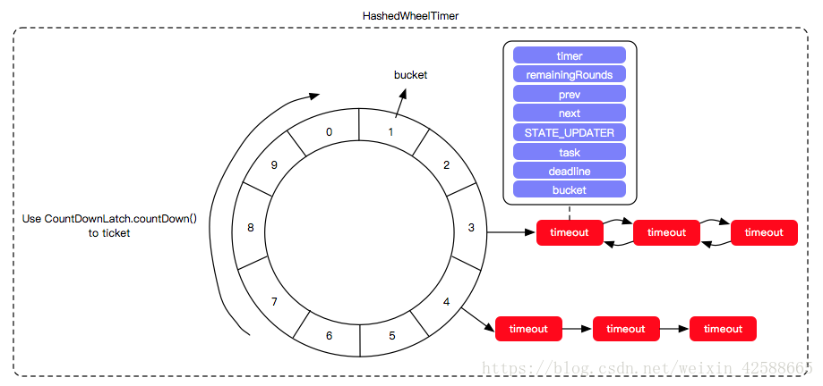

我在2. SOFAJRaft源码分析—JRaft的定时任务调度器是怎么做的？这篇文章里已经讲解过时间轮算法在JRaft中是怎么应用的，但是我感觉我并没有讲解清楚这个东西，导致看了这篇文章依然和没看是一样的，所以我打算重新说透时间轮算法。
时间轮的应用并非 JRaft 独有，其应用场景还有很多，在 Netty、Akka、Quartz、ZooKeeper 、Kafka等组件中都存在时间轮的踪影。
我们下面讲解的时间轮的实现以JRaft中的为例子进行讲解，因为JRaft这部分的代码是参考Netty的，所以大家也可以去Netty中去寻找源码实现。
如果一个系统中存在着大量的调度任务，而大量的调度任务如果每一个都使用自己的调度器来管理任务的生命周期的话，浪费cpu的资源并且很低效。
时间轮是一种高效来利用线程资源来进行批量化调度的一种调度模型。把大批量的调度任务全部都绑定到同一个的调度器上面，使用这一个调度器来进行所有任务的管理（manager），触发（trigger）以及运行（runnable）。能够高效的管理各种延时任务，周期任务，通知任务等等。
不过，时间轮调度器的时间精度可能不是很高，对于精度要求特别高的调度任务可能不太适合。因为时间轮算法的精度取决于，时间段“指针”单元的最小粒度大小，比如时间轮的格子是一秒跳一次，那么调度精度小于一秒的任务就无法被时间轮所调度。

如图，JRaft中时间轮（HashedWheelTimer）是一个存储定时任务的环形队列，底层采用数组实现，数组中的每个元素可以存放一个定时任务列表（HashedWheelBucket），HashedWheelBucket是一个环形的双向链表，链表中的每一项表示的都是定时任务项（HashedWheelTimeout），其中封装了真正的定时任务（TimerTask）。
时间轮由多个时间格组成，每个时间格代表当前时间轮的基本时间跨度（tickDuration）。时间轮的时间格个数是固定的，可用 wheel.length 来表示。
时间轮还有一个表盘指针（tick），用来表示时间轮当前指针跳动的次数，可以用tickDuration * (tick + 1)来表示下一次到期的任务，需要处理此时间格所对应的 HashedWheelBucket 中的所有任务。
时间轮在启动的时候会记录一下当前启动的时间赋值给startTime。时间轮在添加任务的时候首先会计算延迟时间（deadline），比如一个任务的延迟时间为24ms，那么会将当前的时间（currentTime）+24ms-时间轮启动时的时间（startTime）。然后将任务封装成HashedWheelTimeout加入到timeouts队列中，作为缓存。
时间轮在运行的时候会将timeouts中缓存的HashedWheelTimeout任务取10万个出来进行遍历。
然后需要计算出几个参数值：
将timeouts中的数据放置到时间轮wheel中之后，计算出当前时针走到的槽位的位置，并取出槽位中的链表数据，将deadline和当前的时间做对比，运行过期的数据。
public HashedWheelTimer(ThreadFactory threadFactory, long tickDuration, TimeUnit unit, int ticksPerWheel,
long maxPendingTimeouts) {
if (threadFactory == null) {
throw new NullPointerException("threadFactory");
}
//unit = MILLISECONDS
if (unit == null) {
throw new NullPointerException("unit");
}
if (tickDuration <= 0) {
throw new IllegalArgumentException("tickDuration must be greater than 0: " + tickDuration);
}
if (ticksPerWheel <= 0) {
throw new IllegalArgumentException("ticksPerWheel must be greater than 0: " + ticksPerWheel);
}
// Normalize ticksPerWheel to power of two and initialize the wheel.
// 创建一个HashedWheelBucket数组
// 创建时间轮基本的数据结构，一个数组。长度为不小于ticksPerWheel的最小2的n次方
wheel = createWheel(ticksPerWheel);
// 这是一个标示符，用来快速计算任务应该呆的格子。
// 我们知道，给定一个deadline的定时任务，其应该呆的格子=deadline%wheel.length.但是%操作是个相对耗时的操作，所以使用一种变通的位运算代替：
// 因为一圈的长度为2的n次方，mask = 2^n-1后低位将全部是1，然后deadline&mast == deadline%wheel.length
// java中的HashMap在进行hash之后，进行index的hash寻址寻址的算法也是和这个一样的
mask = wheel.length - 1;
// Convert tickDuration to nanos.
//tickDuration传入是1的话，这里会转换成1000000
this.tickDuration = unit.toNanos(tickDuration);
// Prevent overflow.
// 校验是否存在溢出。即指针转动的时间间隔不能太长而导致tickDuration*wheel.length>Long.MAX_VALUE
if (this.tickDuration >= Long.MAX_VALUE / wheel.length) {
throw new IllegalArgumentException(String.format(
"tickDuration: %d (expected: 0 < tickDuration in nanos < %d", tickDuration, Long.MAX_VALUE
/ wheel.length));
}
//将worker包装成thread
workerThread = threadFactory.newThread(worker);
//maxPendingTimeouts = -1
this.maxPendingTimeouts = maxPendingTimeouts;
//如果HashedWheelTimer实例太多，那么就会打印一个error日志
if (instanceCounter.incrementAndGet() > INSTANCE_COUNT_LIMIT
&& warnedTooManyInstances.compareAndSet(false, true)) {
reportTooManyInstances();
}
}在这个构造器中有几个细节需要注意：
public Timeout newTimeout(TimerTask task, long delay, TimeUnit unit) {
if (task == null) {
throw new NullPointerException("task");
}
if (unit == null) {
throw new NullPointerException("unit");
}
long pendingTimeoutsCount = pendingTimeouts.incrementAndGet();
if (maxPendingTimeouts > 0 && pendingTimeoutsCount > maxPendingTimeouts) {
pendingTimeouts.decrementAndGet();
throw new RejectedExecutionException("Number of pending timeouts (" + pendingTimeoutsCount
+ ") is greater than or equal to maximum allowed pending "
+ "timeouts (" + maxPendingTimeouts + ")");
}
// 如果时间轮没有启动，则启动
start();
// Add the timeout to the timeout queue which will be processed on the next tick.
// During processing all the queued HashedWheelTimeouts will be added to the correct HashedWheelBucket.
long deadline = System.nanoTime() + unit.toNanos(delay) - startTime;
// Guard against overflow.
//在delay为正数的情况下，deadline是不可能为负数
//如果为负数，那么说明超过了long的最大值
if (delay > 0 && deadline < 0) {
deadline = Long.MAX_VALUE;
}
// 这里定时任务不是直接加到对应的格子中，而是先加入到一个队列里，然后等到下一个tick的时候，
// 会从队列里取出最多100000个任务加入到指定的格子中
HashedWheelTimeout timeout = new HashedWheelTimeout(this, task, deadline);
//Worker会去处理timeouts队列里面的数据
timeouts.add(timeout);
return timeout;
}start
private final CountDownLatch startTimeInitialized = new CountDownLatch(1);
public void start() {
//workerState一开始的时候是0（WORKER_STATE_INIT），然后才会设置为1（WORKER_STATE_STARTED）
switch (workerStateUpdater.get(this)) {
case WORKER_STATE_INIT:
//使用cas来获取启动调度的权力，只有竞争到的线程允许来进行实例启动
if (workerStateUpdater.compareAndSet(this, WORKER_STATE_INIT, WORKER_STATE_STARTED)) {
//如果成功设置了workerState，那么就调用workerThread线程
workerThread.start();
}
break;
case WORKER_STATE_STARTED:
break;
case WORKER_STATE_SHUTDOWN:
throw new IllegalStateException("cannot be started once stopped");
default:
throw new Error("Invalid WorkerState");
}
// 等待worker线程初始化时间轮的启动时间
// Wait until the startTime is initialized by the worker.
while (startTime == 0) {
try {
//这里使用countDownLauch来确保调度的线程已经被启动
startTimeInitialized.await();
} catch (InterruptedException ignore) {
// Ignore - it will be ready very soon.
}
}
}start方法会根据当前的workerState状态来启动时间轮。并且用了startTimeInitialized来控制线程的运行，如果workerThread没有启动起来，那么newTimeout方法会一直阻塞在运行start方法中。如果不阻塞，newTimeout方法会获取不到startTime。
时间轮的启动在HashedWheelTimer的内部类Worker中。调用workerThread#start方法会调用Worker的run方法启动时间轮。
下面我们看时间轮启动做了什么，下面的分析不考虑任务被取消的情况。
Worker#run
public void run() {
// Initialize the startTime.
startTime = System.nanoTime();
if (startTime == 0) {
// We use 0 as an indicator for the uninitialized value here, so make sure it's not 0 when initialized.
startTime = 1;
}
//HashedWheelTimer的start方法会继续往下运行
// Notify the other threads waiting for the initialization at start().
startTimeInitialized.countDown();
do {
//返回的是当前的nanoTime- startTime
//也就是返回的是 每 tick 一次的时间间隔
final long deadline = waitForNextTick();
if (deadline > 0) {
//算出时间轮的槽位
int idx = (int) (tick & mask);
//移除cancelledTimeouts中的bucket
// 从bucket中移除timeout
processCancelledTasks();
HashedWheelBucket bucket = wheel[idx];
// 将newTimeout()方法中加入到待处理定时任务队列中的任务加入到指定的格子中
transferTimeoutsToBuckets();
bucket.expireTimeouts(deadline);
tick++;
}
// 校验如果workerState是started状态，那么就一直循环
} while (workerStateUpdater.get(HashedWheelTimer.this) == WORKER_STATE_STARTED);
// Fill the unprocessedTimeouts so we can return them from stop() method.
for (HashedWheelBucket bucket : wheel) {
bucket.clearTimeouts(unprocessedTimeouts);
}
for (;;) {
HashedWheelTimeout timeout = timeouts.poll();
if (timeout == null) {
break;
}
//如果有没有被处理的timeout，那么加入到unprocessedTimeouts对列中
if (!timeout.isCancelled()) {
unprocessedTimeouts.add(timeout);
}
}
//处理被取消的任务
processCancelledTasks();
}waitForNextTick
//sleep, 直到下次tick到来, 然后返回该次tick和启动时间之间的时长
private long waitForNextTick() {
//tickDuration这里是100000
//tick表示总tick数
long deadline = tickDuration * (tick + 1);
for (;;) {
final long currentTime = System.nanoTime() - startTime;
// 计算需要sleep的时间, 之所以加999999后再除10000000,前面是1所以这里需要减去1，
// 才能计算准确，还有通过这里可以看到 其实线程是以睡眠一定的时候再来执行下一个ticket的任务的，
//这样如果ticket的间隔设置的太小的话，系统会频繁的睡眠然后启动，
//其实感觉影响部分的性能，所以为了更好的利用系统资源步长可以稍微设置大点
long sleepTimeMs = (deadline - currentTime + 999999) / 1000000;
//sleepTimeMs小于零表示走到了下一个时间轮位置
if (sleepTimeMs <= 0) {
if (currentTime == Long.MIN_VALUE) {
return -Long.MAX_VALUE;
} else {
return currentTime;
}
}
// Check if we run on windows, as if thats the case we will need
// to round the sleepTime as workaround for a bug that only affect
// the JVM if it runs on windows.
//
// See https://github.com/netty/netty/issues/356
if (Platform.isWindows()) {
sleepTimeMs = sleepTimeMs / 10 * 10;
}
try {
Thread.sleep(sleepTimeMs);
} catch (InterruptedException ignored) {
if (workerStateUpdater.get(HashedWheelTimer.this) == WORKER_STATE_SHUTDOWN) {
return Long.MIN_VALUE;
}
}
}
}可以想象一下在时钟的秒钟上面秒与秒之间的时间是需要等待的，那么waitForNextTick这个方法就是根据当前的时间计算出跳动到下个时间的间隔时间，并进行sleep操作，然后返回当前时间距离时间轮启动时间的时间段。
在调用时间轮的方法加入任务的时候并没有直接加入到时间轮中，而是缓存到了timeouts队列中，所以在运行的时候需要将timeouts队列中的任务转移到时间轮数据的链表中
transferTimeoutsToBuckets
private void transferTimeoutsToBuckets() {
// transfer only max. 100000 timeouts per tick to prevent a thread to stale the workerThread when it just
// adds new timeouts in a loop.
// 每次tick只处理10w个任务，以免阻塞worker线程
for (int i = 0; i < 100000; i++) {
HashedWheelTimeout timeout = timeouts.poll();
if (timeout == null) {
// all processed
break;
}
//已经被取消了；
if (timeout.state() == HashedWheelTimeout.ST_CANCELLED) {
// Was cancelled in the meantime.
continue;
}
//calculated = tick 次数
long calculated = timeout.deadline / tickDuration;
// 计算剩余的轮数, 只有 timer 走够轮数, 并且到达了 task 所在的 slot, task 才会过期
timeout.remainingRounds = (calculated - tick) / wheel.length;
//如果任务在timeouts队列里面放久了, 以至于已经过了执行时间, 这个时候就使用当前tick, 也就是放到当前bucket, 此方法调用完后就会被执行
final long ticks = Math.max(calculated, tick); // Ensure we don't schedule for past.
//// 算出任务应该插入的 wheel 的 slot, slotIndex = tick 次数 & mask, mask = wheel.length - 1
int stopIndex = (int) (ticks & mask);
HashedWheelBucket bucket = wheel[stopIndex];
//将timeout加入到bucket链表中
bucket.addTimeout(timeout);
}
}在这个转移方法中，写死了一个循环，每次都只转移10万个任务。
然后根据HashedWheelTimeout的deadline延迟时间计算出时间轮需要运行多少次才能运行当前的任务，如果当前的任务延迟时间大于时间轮跑一圈所需要的时间，那么就计算需要跑几圈才能到这个任务运行。
最后计算出该任务在时间轮中的槽位，添加到时间轮的链表中。
当指针跳到时间轮的槽位的时间，会将槽位的HashedWheelBucket取出来，然后遍历链表，运行其中到期的任务。
expireTimeouts
// 过期并执行格子中的到期任务，tick到该格子的时候，worker线程会调用这个方法
//根据deadline和remainingRounds判断任务是否过期
public void expireTimeouts(long deadline) {
HashedWheelTimeout timeout = head;
// process all timeouts
//遍历格子中的所有定时任务
while (timeout != null) {
// 先保存next，因为移除后next将被设置为null
HashedWheelTimeout next = timeout.next;
if (timeout.remainingRounds <= 0) {
//从bucket链表中移除当前timeout，并返回链表中下一个timeout
next = remove(timeout);
//如果timeout的时间小于当前的时间，那么就调用expire执行task
if (timeout.deadline <= deadline) {
timeout.expire();
} else {
//不可能发生的情况，就是说round已经为0了，deadline却>当前槽的deadline
// The timeout was placed into a wrong slot. This should never happen.
throw new IllegalStateException(String.format("timeout.deadline (%d) > deadline (%d)",
timeout.deadline, deadline));
}
} else if (timeout.isCancelled()) {
next = remove(timeout);
} else {
//因为当前的槽位已经过了，说明已经走了一圈了，把轮数减一
timeout.remainingRounds--;
}
//把指针放置到下一个timeout
timeout = next;
}
}HashedWheelBucket是一个链表，所以我们需要从head节点往下进行遍历。如果链表没有遍历到链表尾部那么就继续往下遍历。
获取的timeout节点节点，如果剩余轮数remainingRounds大于0，那么就说明要到下一圈才能运行，所以将剩余轮数减一；
如果当前剩余轮数小于等于零了，那么就将当前节点从bucket链表中移除，并判断一下当前的时间是否大于timeout的延迟时间，如果是则调用timeout的expire执行任务。